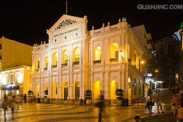
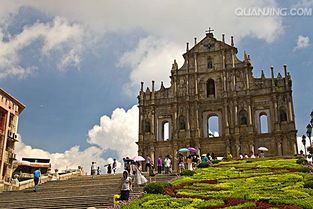
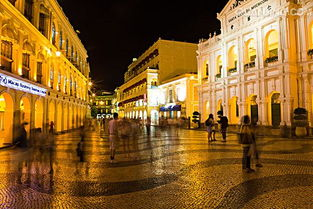
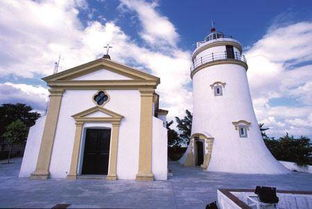
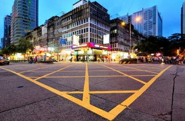

 从旧城墙遗址下看 哪咤庙与大三巴牌坊澳门历史城区（旧称澳门历史建筑群），是由22座位于 澳门半岛的建筑物和相邻 的8块前地所组成的一个旧城区。于2005年7月15日的第29届 世界遗产委员会会议上，澳门历史城区获得21个成员国全体一 致通过，正式被列入世界文化遗产名录内。
 澳门历史城区或澳门历史古城区（旧称澳门历史建筑群），是由22座位于澳门澳门半岛的建筑物和相邻的8块前地所组成， 以旧城区为核心的历史街区。澳门历史城区在第29届联合国教科文组织世界遗产委员会的2005年7月15日会议上，获得21个 成员国全体一致通过，中国“澳门历史城区”正式被列入《世界文化遗产名录》，为中国第31处世界遗产。澳门历史城区是 中国境内现存年代最古老、规模最大、保存最完整和最集中的东西方风格共存建筑群，当中包括中国最古老的教堂遗址和 修道院、最古老的 基督教坟场、最古老的西式炮台建筑群、第一座西式剧院、第一座现代化灯塔和第一所西式大学等。作 为欧洲国家在东亚建立的第一个领地，城区见证了澳门四百多年来中华文化与 西方文化互相交流、多元共存的历史。正因 为中西文化共融的缘故，城区当中的大部分建筑都具有中西合璧的特色。城区内的建筑大部分到今仍完好地保存或保持着 原有的功能。 世界遗产委员会对澳门历史城区的评价是「见证了西方宗教文化在中国以至 远东地区的发展，也见证了向西方传播 中国民 间宗教的历史渊源。是中国现存最古老的西式建筑遗产，是东西方建筑艺术的综合体现。」 由此可见，澳门历史城区是中 国境内接触近代西方器物与文化最早、最多、最重要的地方，同时是近代西方建筑传入中国的第一站。正如澳门特别行政区 行政长官 何厚铧在申请成功后发表的即时书面讲话指出：澳门特区从此列入 联合国教科文组织世遗名录，意义重大深远。
 澳门历史城区保存了澳门四百多年中西文化交流的历史精髓。它是中国境内现存年代最远、规模最大、保存最完整和最集中， 以西式建筑为主、中西式建筑互相辉映的历史城区；是西方宗教文化在中国和远东地区传播历史重要的见证；更是四百多年 来中西文化交流互补、多元共存的结晶。
 16 世纪中叶，因应中外贸易的新形势，明朝政府划出澳门半岛西南部一片地段，供以葡萄牙人为主的外国商人居住及进行贸 易，澳门由此发展成19世纪前中国主要的对外港口，也是亚洲地区重要的国际港口。贸易活动的兴盛吸引了世界各地的人前 来，一个融合欧、亚、非、美四洲人民的“华洋杂居”的国际城市由是诞生。 葡萄牙人将这个用城墙围起的城市命名为“ 天主 圣名之城”，今天的澳门历史城区就是它的核心部分。 四百多年间，在这块城区内，来自葡萄牙、西班牙、荷兰、英国、法国、意大利、美国、日本、 瑞典、印度、马来西亚、 菲 律宾、朝鲜甚至非洲地区等等不同地方的人，带著不同的文化思想，不同的职业技艺，不同的风俗习惯，在澳门历史城区内盖 房子、建教堂、修 马路、筑炮台以至辟建坟场，展开多姿多彩的生活，包括各类文化活动。在这种机遇下，澳门得风气之先， 成为中国境内接触近代西方器物与文化最早、最多、最重要的地方，是当时中国接触西方文化的桥头堡。 随著外国人的定居，他们把自己的建筑传统越洋带到澳门，使澳门成为近代西洋建筑传入中国的第一站。尤其是葡萄牙人在澳 门的建筑物，无不显露出与葡萄牙本土建筑的密切关系。事实上， 文艺复兴后的一些主要建筑形式、风格，结合亚洲其它地区 不同的建筑元素在澳门产生了新的变体，形成独树一帜的建筑风格。
 明末清初，大量 天主教传教士以澳门为传教基地，积极从事远东地区的传教工作，并由此创造出中西文化交流的辉煌篇章。这 些传教士来自不同的修会，他们为中国带来了西方近代的科学技术及人文艺术，又向西方介绍了中国的文化成就。而作为基地的 澳门，在各修会的努力建设下，开创了许多“中国第一”的事业，如中国第一所西式大学（ 圣保禄学院）、中国第一所西式医院 （白马行医院）、中国第一所以西方金属制版和印刷拉丁文字的印刷厂（ 圣保禄学院附属印刷所）、中国第一份外文报纸（《 蜜蜂华报》） ( A Abelha da China) 等等。由耶稣会在澳门开办的圣保禄学院（现已不存）及 圣若瑟修院，为 天主教在远东 和中国的传教事业培养了大量人才，同时也培养了大批中国籍的 传教士，为中西文化交流作出卓越的贡献。 到19 世纪，随著第一位传教士 马礼逊来到中国大陆， 基督新教也以澳门为基地之一，积极开展传教活动。比如中国第一位新教 徒 蔡高就是由马礼逊在澳门为其洗礼；此外，由马礼逊编写的《华英字典》也是在澳门出版。而由新教徒在澳门开办的“ 马礼逊 学校”更将近代西式学校教育模式引入中国，培养出 容闳等著名学生，对中国教育的现代化作为贡献。 另一方面，澳门民间的 妈祖崇拜，表现了澳门与中国闽粤沿海居民妈祖信仰一脉相承的关系。但是，由于社会和历史环境的特殊 性，澳门的妈阁庙在中国众多的 妈祖庙中又别具特色。它既有中国以至海外妈祖崇拜传播和组织的典型特征，又因澳门是近代中 国与西方接触最重要的商港，使妈阁庙成为最早向欧洲传播妈祖文化的地方。 在四百多年的历史里，中国人与葡萄牙人在澳门历史城区内，合力营造了不同的生活社区。这些生活社区，除了展示澳门的中、 西式建筑艺术特色外，更展现了中葡两国人民不同宗教、文化以至生活习惯的交融与尊重。这种中葡人民共同酝酿出来的温情、 淳朴、包容的社区气息，是澳门最具特色、最有价值的地方。
中国现代文学巨擘叶圣陶先生曾说：“倘若要我说说总的印象，我觉得苏州园林是中国各地园林的标本，各地园林或多或少都受 到苏州园林的影响。因此谁如果要鉴赏中国的园林，苏州园林就不该错过。”
单以园林来看，无论是数量学是质量，苏州都是首屈一指。不仅如此，老城区还比较完整地保存着古代的城市建制，这点在当代 中国普遍一刀切的城市建筑格局中尤为突出。无论是城市建制，还是园林设计，苏州处处都体现出了“天人合一”的理念，人居与 自然竟似毫无雕琢地整合在了一起。
因此，在“选美中国”活动的评选中，苏州老城微弱差距屈居鼓浪屿之后，列城区类第二名，这算是名副其实了。
古城苏州，西临太湖，北枕长江，春秋时期就是吴国的都城，历史上曾经有“上有天堂，下有苏杭”的美誉。苏州古城区至今仍落 在原址上，基本保持着古代“水陆并行，河街相邻”的双棋盘格局和“小桥流水、粉墙黛瓦、史迹名园”的独特风貌。
35千米的河道在苏州古城区蜿蜒穿行，河上架着1153座桥，在这河与桥的环绕中，还有69座古典园林，著名的有拙政园、留园、 沧浪亭、狮子林等。苏州园林造诣之高，世无伦比，小桥流水、茂林修竹、奇石假山、画栋雕梁……所有这一切，代表着昔日中国 人的生活理想，体现着人的“诗意的栖居”，它向我们诠释了人应该生活在一个什么样的世界。